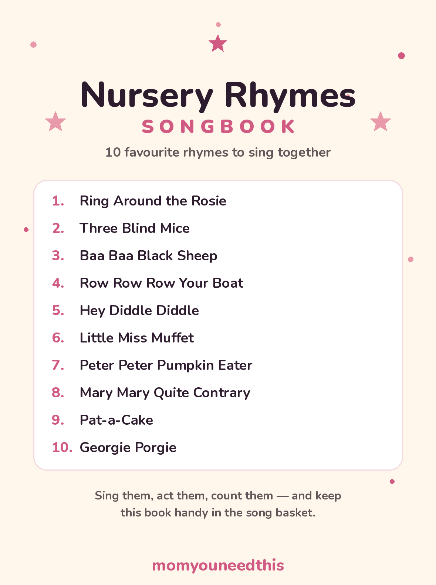

Nursery Rhymes 20 Traditional Rhymes with Lyrics — Plus a Free Printable Songbook
Twenty traditional nursery rhymes in one place — the classic english nursery rhymes and songs families have sung together for generations, grouped into animals and farms, action games, counting rhymes and gentle bedtime favourites. Every rhyme has its own page with full lyrics, and the ten favourites are gathered in a free printable songbook.
Last updated: October 25, 2026
Quick Answer
This hub collects 20 traditional nursery rhymes, each with its own page, full lyrics and a free printable. Rhymes are grouped into animals and farms, action and singing games, counting rhymes, and gentle bedtime favourites. The ten most-loved rhymes are also in one free printable songbook.
At a Glance
- Rhymes: 20, each with its own page and full lyrics
- Groups: Animals & farms, action & singing games, counting, gentle & bedtime
- Printable: 1 songbook — 11 pages (cover + 10 rhymes)
- Ages: Babies to age 5
- Cost: Free — print at home
🌟 What Are Nursery Rhymes — and Why Do They Matter?
A nursery rhyme is a short traditional poem or song made for young children, passed from parent to child by singing rather than by writing. Many of the rhymes on this page are hundreds of years old, and because nobody owns them and everybody sings them slightly differently, small word changes from family to family are part of the tradition — not mistakes.
What a rhyme teaches first is sound. The lines are built on rhythm and rhyming endings — moon and spoon, pie and cry — and a child who hears those patterns over and over is learning to notice the sounds inside words. Teachers call that awareness phonological awareness, and in plain terms it is the groundwork for talking and, later, for reading: a child who can hear that two words rhyme is already breaking words into smaller pieces.
Rhymes are also a child's first stories and first memory games. Each one is short, patterned and predictable, with a tiny cast — a girl and a spider, three men in a tub, a sheep with three bags of wool — so a young child can hold the whole thing in mind, join in on the last word of a line, and eventually 'read' it back to you from memory. Add the singing-together part — eye contact, turn-taking, the same song asked for ten nights running — and a two-minute rhyme quietly covers language, memory and story all at once.
📚 All 20 Nursery Rhymes — the Full Index
Every rhyme below has its own page with the full traditional lyrics and a free printable lyrics sheet. The rhymes are grouped the way families actually use them: animals to point at, action rhymes to move to, counting rhymes to count along with, and gentle ones for winding down.
🐑 Animals & Farms
Baa Baa Black Sheep
One black sheep, three bags of wool — a counting song in disguise.
Three Blind Mice
Three mice, one farmer's wife with a carving knife, and a tune that also works sung as a round.
Hey Diddle Diddle
The cat, the cow and the moon — the silliest picture in all of nursery rhyming, and kids know it.
Little Bo-Peep
She has lost her sheep — and the rhyme tells her to leave them alone, because they will come home.
Old Mother Hubbard
She goes to the cupboard again and again — a long, funny list of things she finds there for her dog.
🙌 Action & Singing Games
Ring Around the Rosie
Hold hands, walk in a circle, sing — and everybody falls down on the last line.
Pat-a-Cake
Clap it, roll it, mark it with B — the very first baking lesson, no oven needed.
Here We Go Round the Mulberry Bush
Wash hands, brush hair, sweep the floor — act out a whole morning, one verse at a time.
Jack and Jill
Up the hill with a pail of water — and the most famous tumble in children's verse on the way down.
Jack Be Nimble
One quick jump over the candlestick. Say it fast, then jump — over a cushion, please.
🔢 Counting Rhymes
Five Little Monkeys
Count down from five, one bumped head at a time — your fingers do the counting.
Solomon Grundy
A whole life in seven short lines — one day of the week at a time.
The Grand Old Duke of York
Ten thousand men march up the hill and down again — and your child can march along to it.
Rub-a-Dub-Dub
Three men in a tub: the butcher, the baker, the candlestick maker. Count them off together.
🌙 Gentle & Bedtime
Row Row Row Your Boat
Rock gently as you sing — and try it as a round once your child knows it by heart.
Wee Willie Winkie
The original bedtime patrol: Wee Willie runs through the town checking every child is in bed.
Little Miss Muffet
A quiet girl, her curds and whey, and one very famous spider.
Mary Mary Quite Contrary
Silver bells and cockle shells — a garden full of things to wonder about together.
Peter Peter Pumpkin Eater
A tongue-twisting little story that lives entirely inside a pumpkin shell.
Georgie Porgie
Pudding, pie and a boy who runs away — a short story rhyme kids love to act out.
📖 The Stories Behind the Rhymes
Spend five minutes reading about dark nursery rhymes online and you will find confident secret histories for almost every verse on this page. Some of those stories might be true. Most are guesses that hardened into 'facts' by being repeated often enough — so here is the honest version for the rhymes parents ask about most.
Ring Around the Rosie and the plague. The popular story says the 'rosie' is a rash, the posies are herbs carried to ward off sickness, 'ashes' is sneezing (or worse), and falling down is dying of plague. It fits together neatly, which is exactly why it spread. But historians and folklorists who study the rhyme doubt it: the rhyme was not written down until the 1880s, hundreds of years after England's last plague, the earliest printed versions use different words, and the plague explanation itself only appeared in print in the mid-1900s. The honest verdict: a good story, probably not a true one.
Mary Mary Quite Contrary. The guesses name three different Marys — Mary I of England, Mary, Queen of Scots, and the Virgin Mary — and explain the silver bells and cockle shells as everything from church decorations to royal jewellery. All of those readings are guesses. The rhyme was printed in the 1740s with no explanation attached, and no evidence from its own time settles which Mary, if any, it meant. Treat every confident answer as what it is: a guess.
Three Blind Mice. Some lists claim the mice were real people and the farmer's wife was a queen punishing them. In the rhyme itself, the farmer's wife is just a farmer's wife with a carving knife, and no document connects the song to any court or queen. What is documented is simpler: it was printed as a musical round — a singing game — which is what it still is today.
Georgie Porgie. This one gets attached to various King Georges and dukes, with the pudding and pie read as political jokes. The evidence is thin in every version — the rhyme appears in print with no names, dates or targets attached. It may have been aimed at somebody once; if so, the aim is lost.
That pattern is the real lesson of every list of nursery rhymes dark meanings: when a story about an old rhyme is stated as certain fact, the certainty is usually the part to doubt. These rhymes are genuinely old, their beginnings were mostly never written down, and 'nobody knows for sure' is the true answer surprisingly often.
🎂 The Right Rhyme for Your Child's Age
Babies (from birth). At this age your voice is the whole point — the rhythm, the rocking, the face. Choose the gentle rhymes: Row Row Row Your Boat as a rocking song, Wee Willie Winkie at bedtime, and Pat-a-Cake once your baby is ready to watch your hands and try to join in. Sing slowly, sing the same ones daily, and let repetition do the work.
Toddlers (ages 1–3). Toddlers want to move. The action rhymes carry this stage: clapping along to Pat-a-Cake, falling down with Ring Around the Rosie, acting out the morning in Here We Go Round the Mulberry Bush, and holding up one fewer finger each verse in Five Little Monkeys.
Preschoolers (ages 3–5). The nursery rhymes for preschoolers can carry more story and more counting: Five Little Monkeys counts down from five, Solomon Grundy strings the days of the week in order, and longer story rhymes like Old Mother Hubbard reward a child who listens to the end and guesses what the cupboard holds next time. This is also the age when children start spotting rhyming words on their own — and showing off about it.
🎵 The Printable Nursery Rhymes Songbook
The ten most-loved rhymes from this page, gathered into one printable book: a cover page plus one page per rhyme, with the full lyrics in big, clear words a young child can follow with a finger. Print it once, and it lives in the song basket, the car, or beside the bed.

✂️ Download Your Free Nursery Rhymes Songbook
11 pages: cover + 10 rhymes — one rhyme per page, in big, clear words.
⬇️ Download Free Songbook 🖨️ Print🎁 Free printable for babies, toddlers and preschoolers
🔁 A Daily Rhyme Routine
- Pick one rhyme a day. Choose from the index above — or let your child point at a group: animals today, counting tomorrow. One rhyme, sung properly, beats a rushed tour of five.
- Sing it three times, three ways. Once at full speed, once slowly with the actions big, and once with your child filling in the last word of every line. That last-word game is where memory and rhyming click.
- Print the songbook. Keep the printed book where singing happens. A child who cannot read yet can still turn to 'their' page, recognize it, and 'read' the rhyme back to you — that performance is early reading confidence.
- End the day with a gentle one. Make Row Row Row Your Boat or Wee Willie Winkie the official last song. A rhyme that always means bedtime becomes a signal your child trusts.
- Revisit favourites without guilt. When a rhyme is requested for the twentieth night running, sing it. Repetition is not a rut — it is how the learning on this page actually happens.
🧭 More Singing, Play & Printables
📚 Learning Activities
The full hub of free printable activities for toddlers and preschoolers. Browse activities.
🎨 Free Coloring Pages
Hundreds of free coloring sheets to print for every age — including plenty of the animals from these rhymes. See the coloring pages.
⭕ Ring Around the Rosie
The most-loved rhyme on this page, with full lyrics, the hand-holding game, and its own printable. Sing Ring Around the Rosie.
🐵 Five Little Monkeys
The counting favourite — full lyrics, the finger-counting actions, and a printable lyrics sheet. Count the monkeys.
❓ Nursery Rhymes FAQ
Are traditional nursery rhymes free to print?
Yes. The traditional nursery rhymes on this page are in the public domain — they were passed down by singing for generations, long before anyone wrote them down, and nobody owns the words. The songbook and every per-rhyme lyrics sheet here are free to print at home as often as you like.
What age should we start singing nursery rhymes?
From birth. A baby is listening to your voice and its rhythm long before the words mean anything, so gentle rhymes like Row Row Row Your Boat work from the very beginning. Toddlers join in with the actions, and preschoolers start memorizing whole rhymes and 'reading' them back to you.
Which nursery rhyme should we sing first?
Start with the one you half-remember already — it is the one you will sing with confidence. Pat-a-Cake is a good first rhyme because the clapping gives a baby something to do, and Row Row Row Your Boat works from the first rocking. After that, follow your child's reactions: the rhyme they ask for again is the right next one.
Do nursery rhymes help with language?
They give children exactly the practice language is built on: listening for sounds, hearing words that rhyme, and remembering a short sequence in order. Hearing that 'moon' and 'spoon' sound alike helps a child notice the sounds inside words, which supports learning to talk and, later, to read. There is no magic in a single singing — the benefit is in the hundreds of small, happy repetitions.
Does every rhyme here have its full lyrics?
Yes — each of the 20 rhymes has its own page with the full traditional lyrics and a matching free printable lyrics sheet. The printable songbook on this page gathers the 10 most-loved rhymes with the same words, one rhyme per page, so the book and the rhyme pages always agree.
Why do some nursery rhymes sound strange, or even dark, today?
Because they come from a different everyday world. The rhymes mention curds and whey, pails of water fetched by hand, and farmers' wives with carving knives because that was ordinary life when they were made up. Some verses sound puzzling simply because the things they describe have disappeared — and as the stories-behind section on this page explains, many of the darker 'meanings' attached to them since are guesses, not facts.